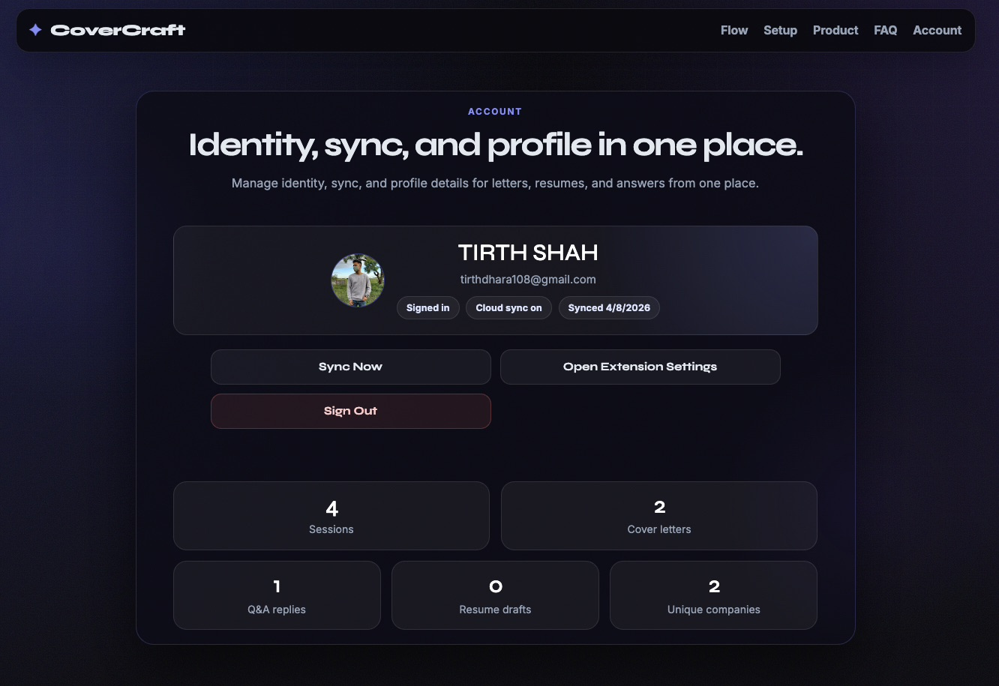

Account
Identity, sync, and top-line usage.

Account actions run inside the extension Dashboard. The website does not read or control extension account data.
The downloadable ZIP supports user-provided OpenRouter, Groq, and Tavily keys, local profiles, sessions, and exports. It does not support production Google sign-in or Firebase sync.
Chrome assigns unpacked extensions a different ID. OAuth redirects are bound to the official Web Store ID, so CoverCraft blocks production login from other IDs.
Open CoverCraft Dashboard, then Profile. Official installs show sign-in and sync controls; local ZIP installs show local-mode status and continue to support profile import.
